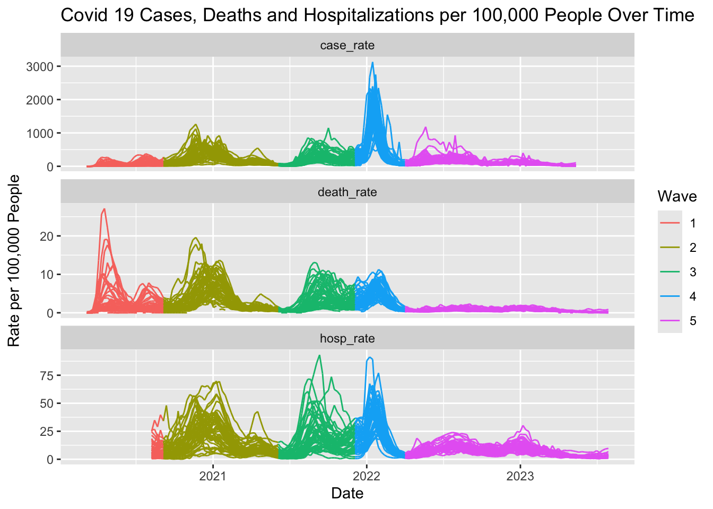
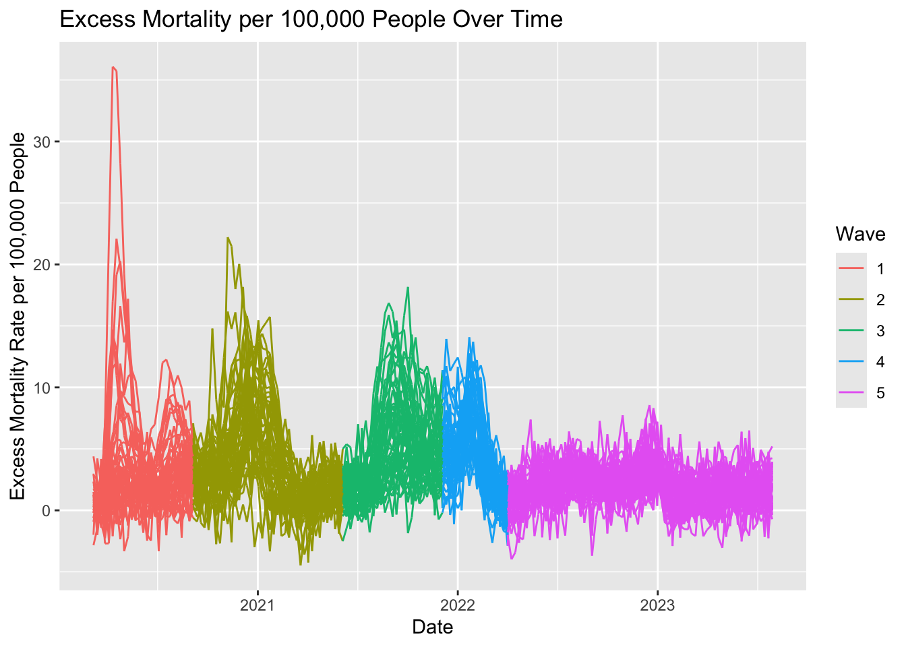
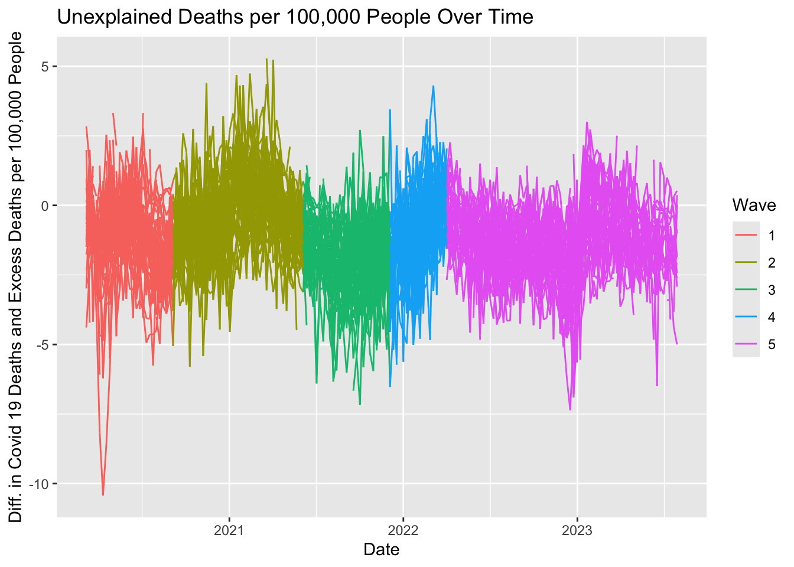

FinalProjectReport
BST 210: Final Project
Julia Capperella, Grace Gaultier, Kathryn Saxton
Abstract
Introduction
Methods
In order to adequately study the Covid-19 pandemic in the United States, multiple data sets are required.
Results
Figure 1: COVID-19 Pandemic Divided into 5 Waves.
Top 5 Performers
| Wave 1 | Wave 2 | Wave 3 | Wave 4 | Wave 5 | |
|---|---|---|---|---|---|
| #1 | Alaska (0.00) | Vermont (0.70) | New York (0.70) | Hawaii (1.90) | Alaska (0.00) |
| #2 | Wyoming (0.00) | Washington (1.24) | Massachusetts (0.78) | New York (2.04) | Wyoming (0.27) |
| #3 | Hawaii (0.31) | Oregon (1.33) | New Jersey (0.88) | Utah (2.07) | Texas (0.43) |
| #4 | Vermont (0.33) | Hawaii (1.35) | Connecticut (0.93) | Washington (2.08) | New York (0.46)) |
| #5 | Oregon (0.50) | Puerto Rico (1.58) | Vermont (0.95) | Puerto Rico (2.16) | Utah (0.47) |
Bottom 5 Performers
| Wave 1 | Wave 2 | Wave 3 | Wave 4 | Wave 5 | |
|---|---|---|---|---|---|
| #1 | New Jersey (6.20) | North Dakota (6.87) | Wyoming (5.78) | West Virginia (6.10) | West Virginia (1.35) |
| #2 | Connecticut (5.66) | South Dakota (6.81) | Montana (5.12) | Ohio (6.00) | Vermont (1.27) |
| #3 | Washington D.C. (5.33) | Wyoming (4.93) | West Virginia (5.06) | New Mexico (5.69) | Delaware (1.20) |
| #4 | Rhode Island (4.86) | Oklahoma (4.91) | Alaska (4.65) | Kentucky (5.52) | Kentucky (1.17) |
| #5 | Massachusetts (4.78) | Rhode Island (4.53) | Florida (4.44) | Oklahoma (5.41) | Maine (1.05) |
Table 1: Weekly Death Rates by Wave. Average weekly COVID-19 death rates per 100,000 people are given in parentheses.

Figure 2: Excess Deaths per 100,000 people over time.

Figure 3: Unexplained Deaths per 100,000 People Over Time.
Highest 5 Average Excess Mortality Rates
| Wave 1 | Wave 2 | Wave 3 | Wave 4 | Wave 5 | |
|---|---|---|---|---|---|
| #1 | New Jersey (7.63) | South Dakota (6.96) | West Virginia (8.48) | New Mexico (8.05) | Maine (3.28) |
| #2 | Washington D.C. (6.63) | North Dakota (6.57) | Wyoming (8.35) | West Virginia (8.00) | Delaware (3.20) |
| #3 | Louisiana (6.09) | New Mexico (5.65) | Arkansas (7.96) | Arizona (7.28) | West Virginia (3.15) |
| #4 | Mississippi (5.82) | Wyoming (5.61) | Montana (7.72) | Tennessee (6.29) | Puerto Rico (3.11) |
| #5 | Connecticut (5.81) | Mississippi (5.58) | Florida (6.76) | Kentucky (6.22) | Vermont (3.03) |
Lowest 5 Average Excess Mortality Rates
| Wave 1 | Wave 2 | Wave 3 | Wave 4 | Wave 5 | |
|---|---|---|---|---|---|
| #1 | Hawaii (0.04) | Massachusetts (1.00) | Massachusetts (1.06) | New York (1.94) | New Jersey (0.45) |
| #2 | Arkansas (0.26) | Hawaii (1.17) | New York (1.24) | Massachusetts (2.20) | Pennsylvania (0.69) |
| #3 | Maine (0.45) | Vermont (1.21) | New Jersey (1.26) | Hawaii (2.90) | Maine (0.70) |
| #4 | Wyoming (0.63) | New York (1.54) | Maryland (1.80) | California (3.03) | New York (0.72) |
| #5 | Massachusetts (4.78) | Washington (1.62) | Connecticut (1.87) | New Jersey (3.04) | Washington D.C. (0.81) |
Table 2: Average Weekly Excess Mortality Rates by Wave. Average weekly excess mortality rates per 100,000 people are given in parentheses.